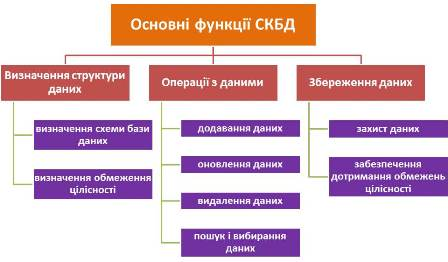
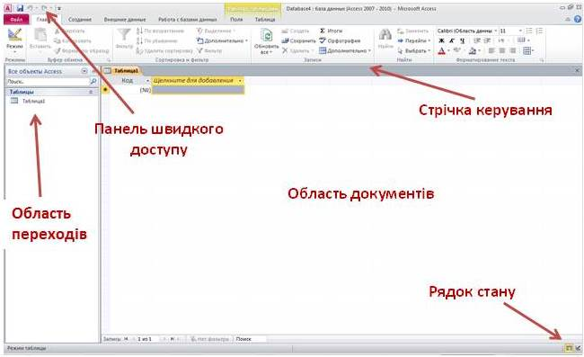

Для роботи з базами даних використовують прикладні програми - системи керування базами даних (СКБД). Вони дають можливість створюють бази даних, організовувати пошук, оновлення даних тощо.
Система керування базами даних (СКБД) — це програма, що забезпечує можливість створення БД та виконання різноманітних операцій з даними, які в ній зберігаються.
3 самого означення СКБД випливає, що можна виділити дві основні категорії функцій СКБД: функції визначення даних - ті, що дозволяють визначити структуру даних у базі, та функції маніпулювання даними, які стосуються операцій із самими даними. Крім того, СКБД дає змогу тривалий час зберігати дані у цілісному вигляді, захищаючи пx від зловмисних та ненавмисних спотворень, тобто виконувати функцію збереження даних, а також ряд інших, менш важливих, функцій.
На позначення операцій з даними вживають нестандартні терміни: стосовно СКБД говорять не «введення даних», а «додавання», не «редагування», а «оновлення», не «виведення», а «пошук i вибирання». Це не випадково, адже, наприклад, редагувати дані вміють лише люди, а коли до БД звертається програма, вона може тільки видалити елемент даних цілком та записати на його місце новий, тобто оновити дані, а не відредагувати. Так само, тільки люди здатні вводити дані, а програми пx додають. Нарешті, ми говоримо про пошук та вибирання даних у СКБД, а нe про пx виведення, оскільки СКБД зовсім не обов’язково виводить дані у тому вигляді, в якому вони були введені в базу. Скажімо, у базу було введено дані про учнів та вчителів, а клієнт хоче отримати прізвища вчителів, які вчать учня Іванова. Щоб виконати цей запит клієнта, СКБД має спочатку знайти вчителів, які викладають у класі цього учня, а потім вибрати їхні прізвища.

СКБД Access входить до складу пакета Microsoft Office і призначена для створення та роботи з реляційними базами даних.
Access – це інтерактивне середовище, до складу якого входять:
візуальні і язикові засоби конструювання реляційних БД;
візуальні компоненти і язикові засоби маніпулювання даними (скопіювати, перенести);
візуальні засоби, що дозволяють конструювати стандартні найбільш розповсюджені SQL запити до БД (запит, отриманий вибіркою інформації, створення набору даних, запит на видалення, вставку, редагування);
обчислювальні функції (набір статистичних, логічних, математичних), засоби для створення та виконання запитів мовою SQL;
вбудовано мову VBA (дозволяє створювати клієнтські додатки для роботи з БД);
засоби візуального конструювання звітів з використанням інформації з БД;
засоби побудови діаграм, шаблонів.
Основними об’єктами СКБД Access є:
Таблиці - об'єкти, які визначаються й використовуються для зберігання даних. Кожна таблиця включає інформацію про об'єкт певного типу. Вона містить поля (стовпці), і записи (рядки), де зібрана вся необхідна інформація про об'єкт.
Запити - дають можливість виконувати відбір інформації з різних наборів даних, створювати нові набори даних, виконувати обчислення, аналіз та пошук інформації, змінювати структуру наборів даних.
Форми - дають можливість створювати прості клієнтські додатки (діалогові вікна) для роботи з БД, за допомогою стандартних візуальних компонентів (списки, кнопки і т.д.), які можна зв'язувати з запитами або наборами даних.
Звіти - створюють на основі інформації з наборів даних та запитів для відображення даних в зручній для перегляду вигляді або виводу на друк. На основі звіту створюється документ, який може бути вставлений в документ іншого додатку.
Відкриття MS Access можна виконати наступними способами:
1) меню кнопки Пуск системи Windows → Усі програми → Microsoft Office → Microsoft Access 2010;
2) відкрити файл с розширенням *.accdb, *.accdw, *.accde, *.accdt, *.accdr, *.mdw.
Після відкриття MS Access на екрані з’явиться діалогове вікно Access з назвою MICROSOFT ACCESS в рядку заголовка. В цьому вікні необхідно вибрати одну із запропонованих дій:
1) відкрити існуючу базу даних;
2) створити нову (пусту) базу даних;
3) створити базу даних за допомогою вбудованих Шаблонів.
Для створення пустої бази даних в розділі Нова база даних:
1. В рядку І’мя файлу задайте ім’я нової бази даних.
2. В кінці рядка І’мя файлу натисніть знак Папка та задайте папку, в якій передбачається зберігати створену базу даних.
3. Натисніть кнопку Створити.
Головним елементом користувацького інтерфейсу MS Access є Стрічка, яка розміщена у верхній части вікна та містить вкладки:
Файл – містить команди та елементи керування файлом, в який збережено базу даних;
Основне – містить команди й елементи керування для роботи з буфером обміну, форматування тексту, сортування та фільтрація даних тощо;
Створення – містить команди для створення таблиць, запитів, форм та інших об’єктів бази даних;
Зовнішні дані – містить команди призначені для експортування й імпортування даних;
Знаряддя бази даних – містить команди встановлення зв’язків між таблицями, аналізу й переміщення даних між програмами й інші.
Стрічка є динамічним об'єктом - під час виконання певних операцій над об'єктами на Стрічці автоматично з'являються ті елементи керування, які потрібні для роботи саме з цим об'єктом.
Панель швидкого доступу розміщена в верхній частині вікна Access. По замовчуванню на цій панелі розташовані кнопки керування: Зберегти, Відмінити, Повернути відміну.
Область навігації Усі об’єкти Access, розташована в лівій частині вікна. Вона призначена для відображення об’єктів або груп об’єктів відкритої бази даних, а також для переходу від об’єкта до об’єкту. Щоб відкрити групу об’єктів натисніть мишкою по назві об’єкта. Керувати об’єктами можна командами Стрічки й командами контекстного меню.
Область документів, в якій відображається кожний об’єкт бази даних, відкритий в обраному режимі. В нижній частині області розташовані кнопки переміщення по записам та пошуку.
Рядок стану, розташований вздовж нижньої границі вікна Access, містить кнопки переключення в різні режими роботи з активним об’єктом.
